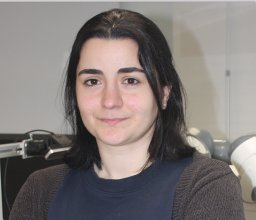

About

Yasemin is an Assistant Professor in the Automatic Control research group at Chalmers University of Technology and Senior Research Fellow in Statistical Machine Learning Group at UCL. She completed her Ph.D. at the Royal Institute of Technology (KTH), Sweden, in 2012. As a researcher at KTH, she was involved in the EU projects CogX (Cognitive Systems that Self-Understand and Self-Extend) and RoboHow (Web-enabled and Experience-based Cognitive Robots that Learn Complex Everyday Manipulation Tasks). Later, she worked as a post-doctoral researcher at University of Birmingham contributing to the EU project RoMaNs (Robotic Manipulation for Nuclear Sort and Segregation), and as a research scientist at ABB, Corporate Research, Sweden, coordinating the EU project SARAFun (Smart Assembly Robot with Advanced Functionalities). She also worked for a start-up in San Francisco Bay Area where she led the research on robotic grasp planning and manipulation for industrial tasks, also developing prototype systems capable of grasping various types of objects for different manipulation goals. She received the Best Paper Award at IEEE International Conference on Robotics and Automation for Humanitarian Applications (RAHA) in 2016 and the Best Manipulation Paper Award at IEEE International Conference on Robotics and Automation (ICRA) in 2013, and was IEEE/RSJ International Conference on Intelligent Robots and Systems (IROS) CoTeSys Cognitive Robotics Best Paper Award Finalist in 2013. Her research is focused on data driven learning for robotics applications with a focus on Bayesian non-parametrics. In specific she is interested in data efficient learning from multisensory data.